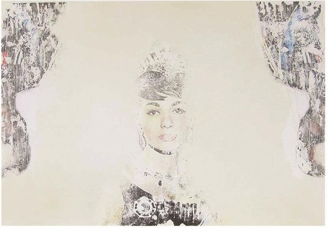
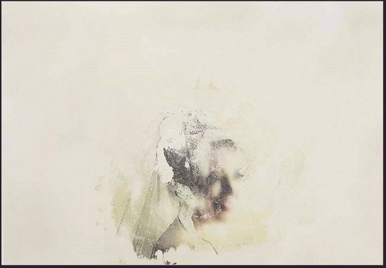
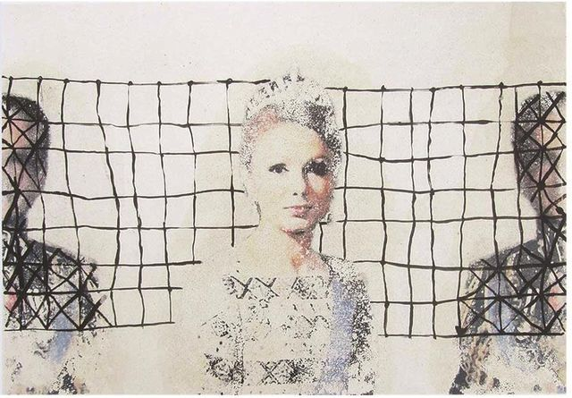
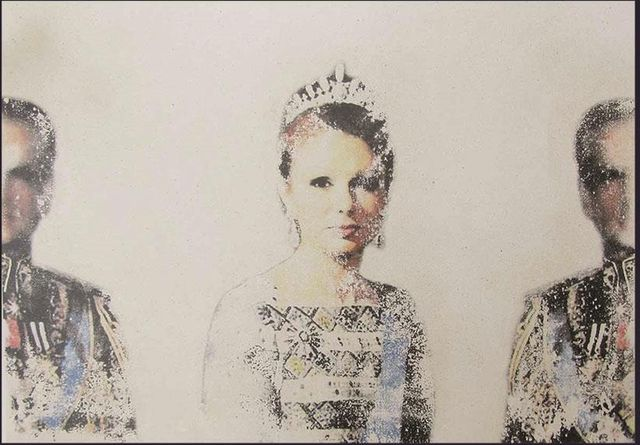
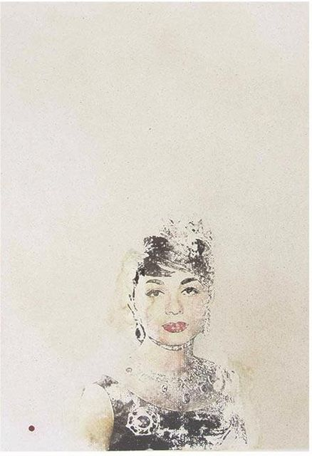
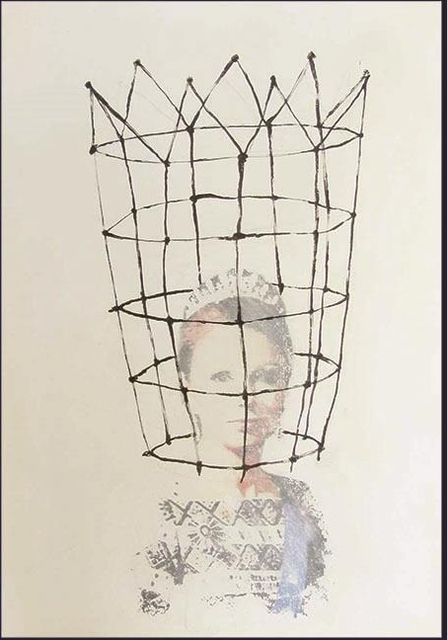

Works7 artworks













History of experienceBiography · education · exhibitions · awards
Education
- 2001Unfinished studies in M.A. Painting|Tarbiat Moddares University
- 1998B.A. in Painting|Azad University
Memberships
- Member of Iranian Painters Society (IPS)
- Honorary Member of Institute for Promotion of Visual Arts
Teaching experience
- 1989–2012Teaching in various sections & different Art Departments
- 1999–2002Teaching in Azad University (Courses taught: Islamic art and history 1 & 2 - Introduction to contemporary art - Basic sketching - Advance sketching)
- 2005–2006Teaching in Semnan University (Pardis 2) (Courses taught: Islamic art and history 1 & 2 - Basics of visual arts|- Introduction to contemporary art)
Solo exhibitions
- 2015My Brides series, Vali Art Gallery|Tehran – Iran
- 2014Hazard series, Vali Art Gallery|Tehran Iran
- 2014Portraits, Negah Art Gallery|Lavasan – Iran
- 2013I am not sinner (presentation), Gemak Gallery|The Heuge — Netherland
- 2012Green — White - Red series, Vali Gallery|Tehran – Iran
- 2011Snowy series, Golestan Art Gallery|Tehran – Iran
- 2010String show series, Mah Art Gallery|Tehran – Iran
- 2007Haft Samar Art Gallery|Tehran – Iran
- 2007Azad Art Gallery|Tehran – Iran
- 1994Afrand Gallery|Tehran – Iran
Selected group exhibitions
- 2012Tehran Auction (Modern & Contemporary Iranian Art)|Tehran – Iran
- 2011Amir Art Collection|Milan— Italy
- 2011Doll — Shirin Art Center|Tehran – Iran
- 2011+Me— Elahe Gallery|Tehran – Iran
- 2011On Man's Plus - Art Center|Tehran Iran
- 2010Portrait— Mah Art Gallery|Tehran – Iran
- 2010The Artists Of World For Humanity|Lausanne —Suisse
- 2008Big Exhibition —Iranian Artists Forum|Tehran – Iran
- 20083 Painters, 3 Looks —Vali Art Gallery|Tehran – Iran
- 2007Big Exhibition o— Saad Abad Museum|Tehran – Iran
- 2006Spiritual Art Exhibition — Niavaran Creations Foundation|Tehran – Iran
- 2004Vancouver Canada
- (& Participated in Over 40 National & International Exhibitions.)
Articles during the past two years
- Don't be an artist to be an artist.
- Obstruction in criticism, counterfeit in production.
- Walking with tight shoes.
- Wishing with loud sound.
- Three sides of lethargy triangle.
- An artist wants a perfect life not a perfect death.
- Seeing one as seeing all.
- Twilight of an exhibition.
- Hallucination of eternity.
- Accessibility of the media, complication of art content.
- Photographer of our shocks and frights.
Honors
- 2011Honorable Mention, PWHF (Persian Wildlife Heritage Foundation)
- 2008Honorable Mention, Imam Ali Museum
- 2008Honorable Mention, Iranian Painters Society (IPS)
Source: the Sobhan Gallery artist catalogue “Sobhan Gallery. C. Saeed Rafiee Monfared.pdf”.